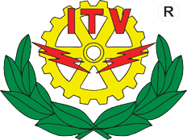
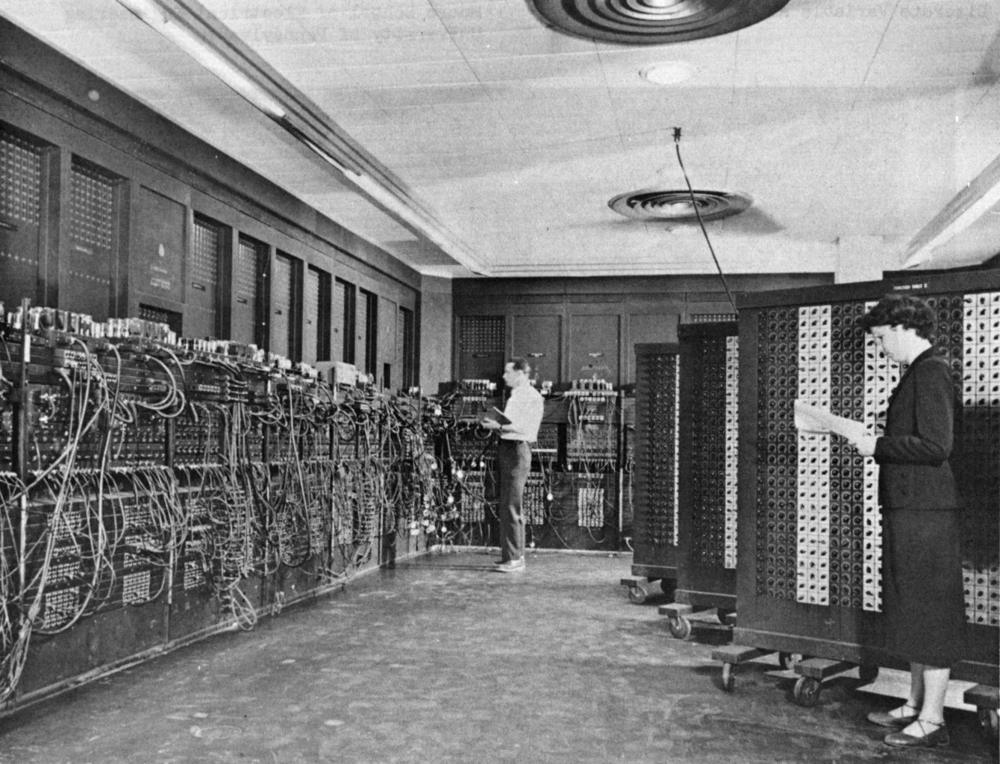
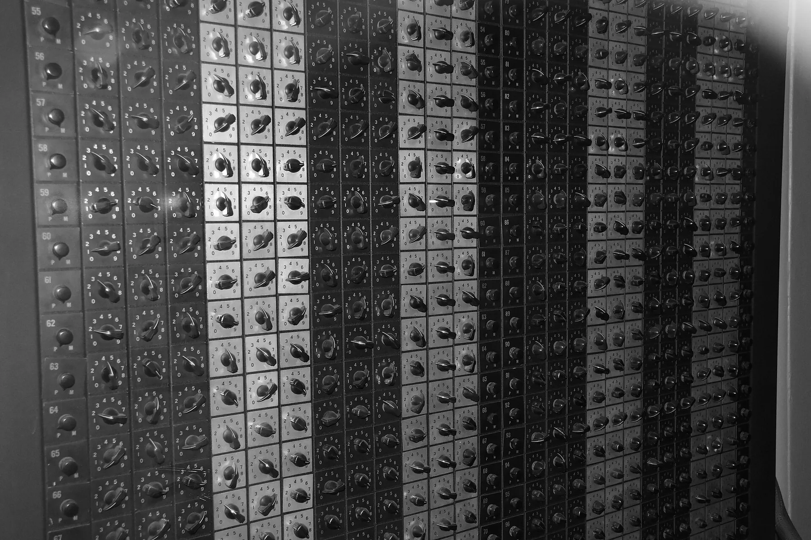

Áreas tecnológicas
Desarrollo e ingeniería de software. Del primer commit al despliegue: requisitos, diseño, pruebas, revisión de código y control de versiones, para construir programas que funcionan y se pueden mantener.
 Únete al capítulo
Únete al capítulo
El capítulo estudiantil de IEEE Computer Society en el Instituto Tecnológico de Veracruz: talleres, hackatones y proyectos para quienes estudian computación.
Únete al capítuloIEEE Computer Society nació en 1946, el año de la ENIAC. Ochenta años después, su capítulo en el Tec de Veracruz reúne a quienes aprenden computación construyéndola.
Quiénes somos. Un grupo de estudiantes del Instituto Tecnológico de Veracruz que organiza talleres, charlas, hackatones y proyectos de computación. El capítulo está abierto a estudiantes de Sistemas Computacionales y carreras afines, con o sin experiencia previa.
Qué es IEEE CS. La sociedad de IEEE dedicada a la computación. Reúne a profesionales, docentes y estudiantes de todas sus áreas y, con conferencias, publicaciones y programas, impulsa la formación y la vinculación que mueven el avance tecnológico.
Dónde estamos. En el Instituto Tecnológico de Veracruz, parte del Tecnológico Nacional de México, en el puerto de Veracruz. Las actividades son en el campus y, cuando conviene, en línea.


Cómo encontrarnos. Escríbenos al correo del capítulo o búscanos en redes sociales. Publicamos cada actividad con fecha, lugar y cupo, y respondemos dudas sobre cómo afiliarte a IEEE.

Desarrollo e ingeniería de software. Del primer commit al despliegue: requisitos, diseño, pruebas, revisión de código y control de versiones, para construir programas que funcionan y se pueden mantener.
Inteligencia artificial y ciencia de datos. Limpiar, analizar y visualizar datos, entrenar modelos y explicar sus resultados con evidencia, no con intuición.
Ciberseguridad y computación en la nube. Cómo se atacan y se defienden los sistemas, y cómo se despliegan servicios que escalan: redes, criptografía, contenedores e infraestructura como código.
Tecnologías emergentes. Cómputo cuántico, internet de las cosas, realidad extendida y lo que todavía no aparece en el temario: lo exploramos antes de que sea obligatorio.
Sesiones con la computadora abierta en las que se aprende una herramienta concreta de principio a fin: Git, Python, bases de datos, despliegue en la nube. Cada taller termina con algo funcionando en tu máquina.
Qué te llevas: un repositorio con lo que construiste.

Cada hueco de la celosía del edificio es un bit: encendido o apagado. Escribe tu nombre y míralo en unos y ceros.

Calendario por publicar · ejemplos de formato
| Actividad | Formato | Lugar | Fecha |
|---|---|---|---|
| Git y GitHub para proyectos en equipo | Taller | Laboratorio de cómputo | Por confirmar |
| Cómo se protege una red universitaria | Conferencia | Auditorio | Por confirmar |
| Reto de 24 horas del capítulo | Hackatón | Campus ITVER | Por confirmar |
| Entrenamiento para IEEEXtreme | Competencia | En línea | Por confirmar |
| Python para análisis de datos | Taller | Laboratorio de cómputo | Por confirmar |
| Presentación de proyectos del semestre | Proyectos | Explanada | Por confirmar |
Estos títulos son ejemplos de formato. Publicaremos el calendario real con fechas, lugar y registro.


El capítulo IEEE Computer Society del Instituto Tecnológico de Veracruz existe para que aprender computación no dependa solo del aula. Aquí encuentras networking con estudiantes de otros semestres, egresados y profesionales; colaboración en equipos que construyen cosas reales, y crecimiento profesional y académico con talleres y experiencia de liderazgo en la mesa directiva. Ser parte de IEEE te conecta con una red internacional que, desde 1946, reúne a quienes hacen avanzar la computación, con acceso a conferencias, publicaciones y competencias como IEEEXtreme. No necesitas experiencia previa: necesitas curiosidad y ganas de terminar lo que empiezas. Escríbenos y empieza este semestre.
Participar en el capítulo empieza el día que nos escribes. Afiliarte a IEEE y a Computer Society te da, además, acceso a la red internacional, sus publicaciones y sus competencias.
Escríbenos o ven a una actividad abierta5 min
Conoce a la mesa directiva1 sesión
Crea tu cuenta en ieee.org10 min
Elige la membresía estudiantil10 min
Agrega IEEE Computer Society5 min
Registra tu rama estudiantil: ITVER5 min
Eres parte del capítuloMenos de una semana
Instituto Tecnológico de Veracruz · Veracruz, Ver., México